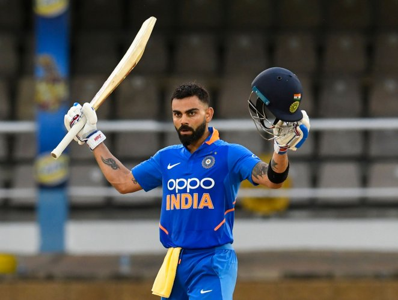

The BCCI on Wednesday named Rohit Sharma as India's full-time captain for ODIs and T20Is. The star opener will replace Virat Kohli as ODI captain from the tour of South Africa.

The Board of Control for Cricket in India (BCCI) on Wednesday announced that Rohit Sharma will take over from Virat Kohli as the captain of India's ODI team as well. Rohit was appointed as full-time T20I skipper after Kohli decided to step down from the role after India's T20 World Cup campaign.
"The All-India Senior Selection Committee also decided to name Mr Rohit Sharma as the Captain of the ODI & T20I teams going forward," the BCCI said in a statement after announcing India's Test squad for the South Africa tour.
Virat Kohli, who took over as India's limited-overs captain from MS Dhoni in 2017, led the team in 95 ODIs, winning 65 of them with a win percentage of 68. Kohli led India in the Champions Trophy and the 2019 World Cup but India lost in the final to Pakistan in the former tournament and were eliminated in the semi-final of the 50-overe showpiece event.
Rohit was named as the vice-captain of the Test team as the BCCI senior selection committee announced an 18-member squad for th 3-Test series, starting December 26 in South Africa. Rohit replaced Ajinkya Rahane who has been struggling with a continued lean patch in the longest format of the game.
When Virat Kohli said he would continue to lead India in ODIs.

Notably, Virat Kohli had said that he would continue to lead India in ODIs and Tests after stepping down as T20I captain following the T20 World Cup in the UAE.
However, the selectors seems to have made the call to appoint Rohit as ODI captain, keeping in mind the 2023 World Cup which will be played in India.
"Understanding workload is a very important thing and considering my immense workload over the last 8-9 years playing all 3 formats and captaining regularly for the last 5-6 years, I feel I need to give myself space to be fully ready to lead the Indian team in Test and ODI cricket," Kohli had said before the T20 World Cup.
""Of course, arriving at this decision took a lot of time. After a lot of contemplation and discussion with my close people, Ravi Bhai and also Rohit, who has been an essential part of the leadership group, I have decided to step down as the T20 captain...," he added.